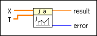

Uneven Numeric Integration VI
Owning Palette: Integration & Differentiation VIs
Requires: Full Development System
Performs numeric integration on the unevenly spaced values in the input array using the trapezoidal method.

 Add to the block diagram Add to the block diagram |
 Find on the palette Find on the palette |